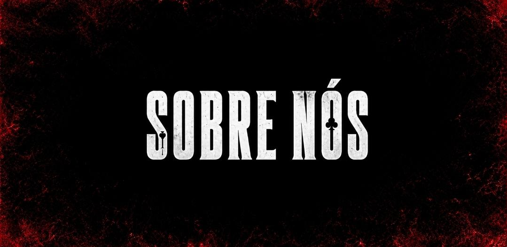
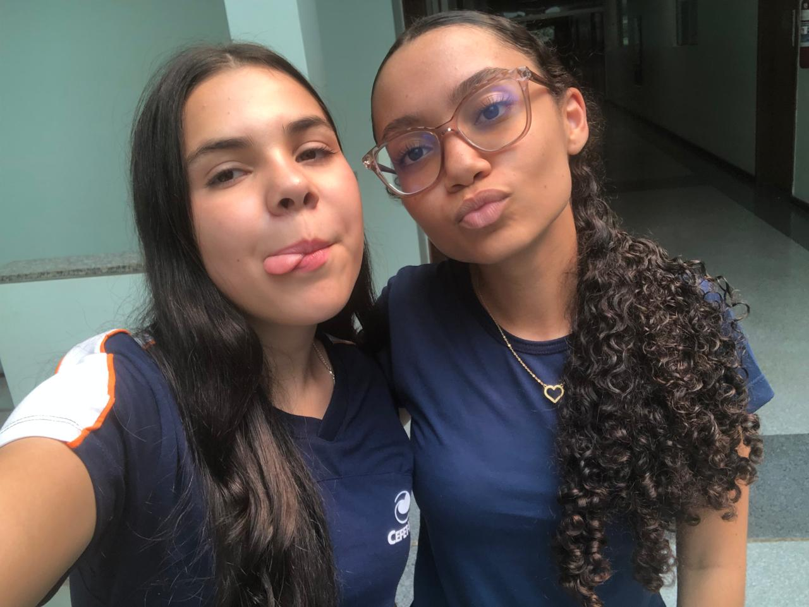
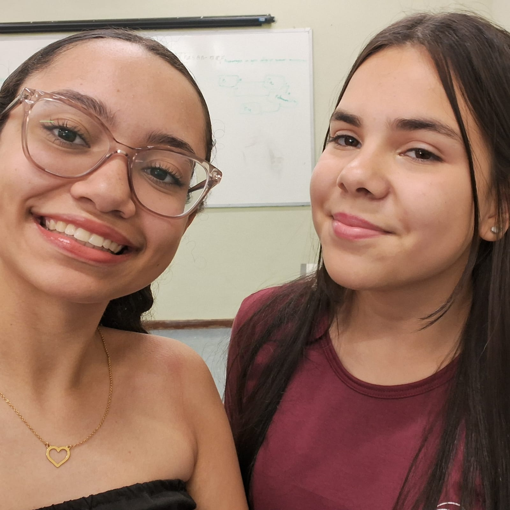

Somos Ludmila Marques e Letícia Eloá, estudantes do 1º ano do curso técnico de Informática do CEFET-MG. Desenvolvemos este site como parte de um trabalho da disciplina de LPW (Linguagem de Programação para Web), ministrada pelo (queridíssimo) professor Coutinho, colocando em prática os conhecimentos adquiridos ao longo do semestre.
Criamos este site com o objetivo de apresentar informações sobre uma série da Netflix, escolhida por representar um interesse compartilhado entre nós. A partir desse tema, desenvolvemos um projeto que reúne curiosidades, personagens e outras informações de forma organizada e atrativa.
Além de compartilhar nossa admiração pela obra, buscamos aplicar conceitos de desenvolvimento web, design e programação, tornando este projeto uma oportunidade de aprendizado e criatividade.
Caso deseje entrar em contato conosco, seja para esclarecer dúvidas, compartilhar sugestões, fazer comentários ou conversar sobre o projeto, ficaremos felizes em receber sua mensagem. Agradecemos pela visita e pelo interesse em nosso trabalho!
@ludmilamarquesdf@gmail.com @leticiaeap26@gmail.com
(31)99848-9378 (31)98434-3813